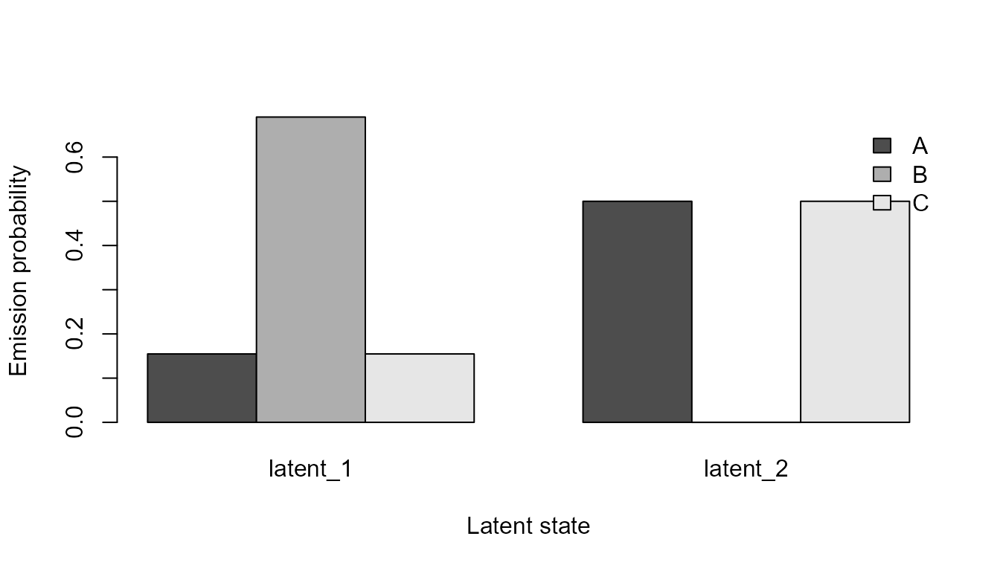

Multichannel and Covariate-Dependent HMMs
Source:vignettes/multichannel-and-covariate-hmms.Rmd
multichannel-and-covariate-hmms.RmdScope and guardrails
Multichannel HMMs model several categorical observation channels through a shared finite-state process. Covariate-dependent HMMs allow initial and transition probabilities to vary with declared numeric covariates. Latent states are statistical model states; labels should not be treated as emotion, cognition, diagnosis, or causal mechanisms.
Synthetic data
paths <- list(
s1 = c("A", "A", "B", "B", "C"),
s2 = c("A", "B", "B", "C", "C"),
s3 = c("C", "C", "B", "B", "A"),
s4 = c("C", "B", "B", "A", "A"),
s5 = c("A", "A", "B", "C", "C"),
s6 = c("C", "C", "B", "A", "A")
)
data <- do.call(rbind, lapply(seq_along(paths), function(i) {
data.frame(
sequence_id = names(paths)[i],
sequence_order = seq_along(paths[[i]]),
state = paths[[i]],
context = c("x", "x", "y", "y", "z"),
condition = as.integer(i > 3L),
stringsAsFactors = FALSE
)
}))Multichannel model
multi <- fit_multichannel_sequence_hmm(
data,
n_states = 2L,
channel_cols = c("state", "context"),
max_iter = 15L,
seed = 2L
)
summarise_multichannel_sequence_hmm(multi)$fit
#> n_states n_channels n_sequences n_observations log_likelihood aic
#> 1 2 2 6 30 -54.43378 130.8676
#> bic iterations converged
#> 1 146.2807 15 FALSE
head(decode_multichannel_sequence_states(multi))
#> sequence_id sequence_order latent_state posterior_probability decoding_method
#> 1 s1 1 latent_2 1.0000000 viterbi
#> 2 s1 2 latent_2 0.8794941 viterbi
#> 3 s1 3 latent_1 1.0000000 viterbi
#> 4 s1 4 latent_1 1.0000000 viterbi
#> 5 s1 5 latent_2 0.9999783 viterbi
#> 6 s2 1 latent_2 1.0000000 viterbi
#> state context
#> 1 A x
#> 2 A x
#> 3 B y
#> 4 B y
#> 5 C z
#> 6 A x
plot_multichannel_sequence_hmm(multi, channel = "state")
Covariate-dependent model
covariate <- fit_covariate_sequence_hmm(
data,
n_states = 2L,
initial_covariate_cols = "condition",
transition_covariate_cols = "condition",
max_iter = 10L,
inner_maxit = 30L,
seed = 3L
)
summarise_covariate_sequence_hmm(covariate)$fit
#> n_states n_sequences n_observations log_likelihood aic bic
#> 1 2 6 30 -29.67882 79.35764 93.36961
#> iterations converged optimizers_converged ridge
#> 1 10 FALSE TRUE 1e-06
predict_covariate_transition_probabilities(
covariate,
data.frame(condition = c(0, 1))
)
#> row from_state to_state probability
#> 1 1 latent_1 latent_1 0.2432060
#> 2 1 latent_1 latent_2 0.7567940
#> 3 1 latent_2 latent_1 0.1281876
#> 4 1 latent_2 latent_2 0.8718124
#> 5 2 latent_1 latent_1 0.5231559
#> 6 2 latent_1 latent_2 0.4768441
#> 7 2 latent_2 latent_1 0.5798800
#> 8 2 latent_2 latent_2 0.4201200
head(decode_covariate_sequence_states(covariate))
#> sequence_id sequence_order observed_state latent_state posterior_probability
#> 1 s1 1 A latent_1 0.9999204
#> 2 s1 2 A latent_1 0.6392483
#> 3 s1 3 B latent_2 0.9931941
#> 4 s1 4 B latent_2 0.9953192
#> 5 s1 5 C latent_2 0.8284966
#> 6 s2 1 A latent_1 0.9998787
#> decoding_method
#> 1 viterbi
#> 2 viterbi
#> 3 viterbi
#> 4 viterbi
#> 5 viterbi
#> 6 viterbi